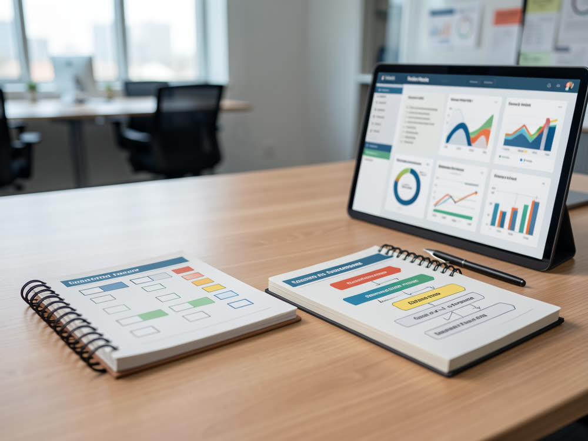
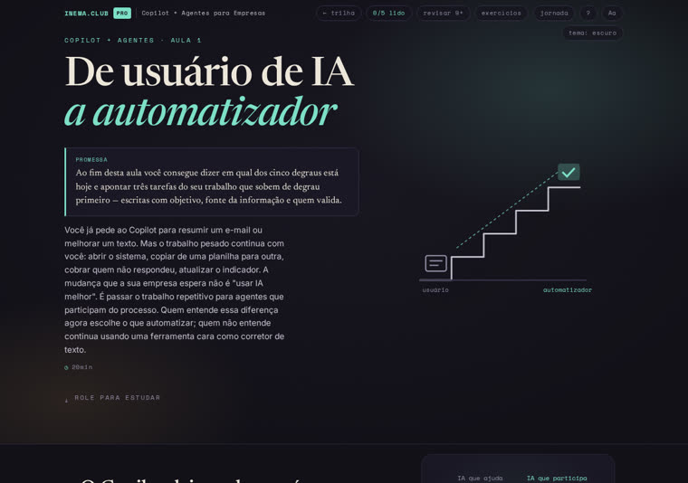
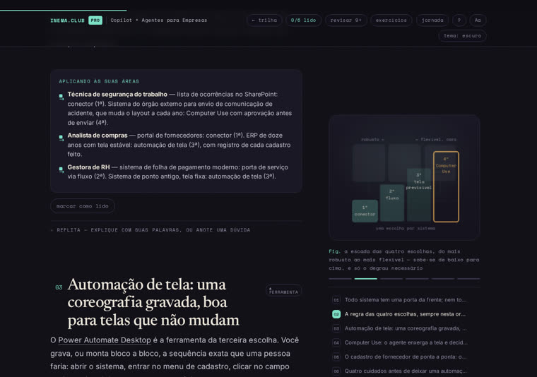

Canvas, prompts, instruções de agente, fluxos, checklists de integração e governança, fichas de indicador e plano de três fases — prontos para copiar e usar com Copilot, Copilot Studio, Power Automate e Power BI. Mais duas ferramentas para quem monta cursos ARCKHÉ v5.

Nasceu do curso Copilot + Agentes para Empresas (ARCKHÉ AI PRO, 9 aulas). O curso ensina; o kit entrega o que a pessoa copia. As ferramentas são o que sobrou de útil da produção do próprio curso.
Markdown, em português, sem código. Canvas de automação com agentes, prompts do dia a dia, prompts de dados, instruções de agente, anatomia de fluxos, regra das quatro escolhas, sete conferências de governança, ficha de indicador, plano de três fases, os cinco degraus.
Verificador por aula para o formato-curso v5: tempo estimado vs declarado, jargão-sentinela, cobertura de figuras, contagens do portão, anti-duplicação recap ↔ cartões, emoji e exclamação dupla. Só Python 3, sem dependências.
Teste headless do motor (Playwright): roteador, tempo, figuras no celular, quiz, prática, progresso, painéis, tema, persistência e landing. Termina em ERROS: nenhum ou aponta o que falhou.
A ordem sugerida para um primeiro projeto de agente numa empresa. Cada etapa tem um arquivo do kit; os prompts (dia a dia e dados) entram desde o primeiro dia.
Situar o trabalho nos cinco degraus e preencher o canvas de nove campos com nomes reais.
Agente no Copilot Studio (instruções + conhecimento), fluxo no Power Automate (aprovação, registro, aviso de falha), integração pela melhor porta.
Três indicadores com meta, dono e fonte automática; o Copilot explica o desvio; o alerta chama o gestor.
Sete conferências antes de sair do rascunho, e um plano de três fases com critério de pronto.
Copie o bloco, troque o que está entre < >. Os casos (técnica de segurança do trabalho, analista de compras, gestora de RH, coordenador financeiro) são fictÃcios.
Usuário → aumentado → designer de workflows → construtor de agentes → automatizador. O modelo mental Pessoa → Agente → Sistemas e o filtro das três primeiras tarefas.
Nove campos numa página, exemplo preenchido (conciliação de pagamentos) e a distribuição agente / fluxo / tela / indicador.
Busca que cruza fontes, e-mail longo → decidido / pendente / quem não respondeu, reunião → decisões, responsáveis e prazos, documento e apresentação.
Excel, Analyst e Researcher: "o que mudou e por quê", hipótese testável entre arquivos, pesquisa dentro + fora, as três conferências de dois minutos.
Modelo papel · escopo · regras · tom para o Copilot Studio, checklist de criação em seis passos e manutenção semanal.
Aprovação, documento vencendo e ocorrência chamada pelo agente — sempre com registro e aviso de falha.
Conector → fluxo → automação de tela → Computer Use; cadastro de fornecedor de ponta a ponta; caso com gabarito.
Sete conferências antes de publicar, onde a pessoa é obrigatória, argumento para a diretoria, mini-caso do compartilhamento excessivo.
Ficha de indicador, pedido ao Copilot para explicar um desvio, painel mÃnimo em cinco passos, banco por área, perguntas que um gestor deve poder fazer.
Protótipo → execução → escala com critério de pronto, os quatro laboratórios, casos por departamento, roadmap da empresa em nove fases.
O kit é texto: precisa só do Copilot liberado pela empresa. As ferramentas pedem Python 3 e, para o teste do motor, Node com Playwright.
Microsoft 365 Copilot na conta de trabalho. Copilot Studio e Power Automate para os modelos 04 e 05 (se não tiver acesso, os modelos viram a especificação que o TI vai pedir).
# nada para instalar git clone https://github.com/linnoff88-dev/copilot-agentes-kit
Python 3 padrão. Sem pacotes extras.
python3 --version # 3.8 ou mais
Node 18+ e Playwright com Chromium (ou um Playwright já instalado em outro lugar, via PLAYWRIGHT_DIR).
npm i -D playwright npx playwright install chromium
Os passos 1 a 4 são para quem vai usar o kit no trabalho. Os passos 5 a 7 são para quem monta cursos ARCKHÉ v5.
kit/Dez arquivos markdown. Leia o 10 primeiro (cinco minutos) para situar o seu trabalho nos cinco degraus.
git clone https://github.com/linnoff88-dev/copilot-agentes-kit cd copilot-agentes-kit/kit && ls # 01 … 10
Abra 02-prompts-copilot-dia-a-dia.md, copie o bloco da reunião, troque o que está entre < > e cole no Copilot do Teams. Regra que vale para todos: assunto com nome próprio + perÃodo + o que você quer ver no fim.
Use a reunião <nome e data>. Faça, nesta ordem:
1. Resumo em até 10 linhas. 2. Decisões, sem "talvez".
3. Para cada decisão: responsável (um nome), tarefa e prazo.
4. Pendências sem responsável. 5. Mensagem de acompanhamento cobrando com prazo.
01-canvas-automacao-com-agentes.md: nove campos, doze minutos, nomes reais. Marque com ✱ as decisões que passam pela lista de riscos (arquivo 07). "Não sei ainda" vale no campo Integração — o arquivo 06 resolve depois.
CANVAS — <nome do processo>
Objetivo · Entradas · Conhecimento · Decisões (✱ humanas) · Ações
Integração · Validação · Indicadores
Agente em rascunho com o modelo do arquivo 04 (teste com três perguntas, uma fora do escopo). Fluxo de aprovação com o arquivo 05 (registro + aviso de falha). Três indicadores com o arquivo 08. Antes de publicar, as sete conferências do arquivo 07. Apresente com o plano de três fases do arquivo 09.
# ordem sugerida
10 → 01 → 04 → 05 → 06 → 08 → 07 → 09
Escreva cada aula num arquivo (parts/NN-aula.html) e rode o verificador ao fechar cada uma. Ele imprime o tempo estimado, o jargão-sentinela com contexto, as contagens do portão e a anti-duplicação recap ↔ cartões. Só depois concatene.
python3 tools/check-v5.py parts/01-aula.html # palavras=1880 quiz=1 pratica~10min → estimado 20min | data-tempo=20 # steps=5 figs=5 … manifesto=1 AUSENTE=0 # DUPLICAÇÃO ≥6: … ↠se aparecer, reescreva o cartão cat parts/*.html > curso.html
Abre curso.html e landing.html num Chromium sem janela, fecha o onboarding, navega, clica no quiz e na prática, abre os painéis, troca o tema, recarrega e testa no celular. Tira screenshots na pasta indicada.
node tools/browser-test.cjs /caminho/do/curso shots # … statcards: 0/9 aulas concluÃdas ~203min faltam # … mobile body scrollWidth ok: true # ERROS: nenhum # Playwright em outro lugar? PLAYWRIGHT_DIR=/x/node_modules/playwright node tools/browser-test.cjs …
Capa pela skill capa-ARCKHÉ, index.html com redirect para a landing, .nojekyll, push e GitHub Pages. Catálogo pela skill atualiza-portal.
node ~/.claude/skills/capa-ARCKHÉ/assets/gerar-capa.cjs --repo . --title "TÃtulo" --cat "Categoria" git push && gh api -X POST repos/linnoff88-dev/<repo>/pages -f 'source[branch]=main' -f 'source[path]=/'
As duas ferramentas rodaram sobre o curso de origem: nove aulas, manifesto 100% conforme, zero erros de console.


Versão 1 é o que está no repo hoje. As fases seguintes dependem do uso real.